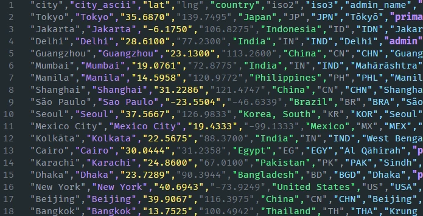

Homemade CSV Parsing

Troubles, woes, and other issues over the deceptively simple text-based data transfer format. Every programmer knows it, but barely anyone recognizes the full standard, and how unfriendly it can be to parse by hand.
A simple practical example
Picture this. You get tasked with parsing system logs, exciting stuff, I know. Some rogue program keeps causing issues on the production server, and nobody can catch it in action.
The authors of said logging library thought ahead and made sure to export logs in the CSV format. File format so plain that it is completely text-only, one that has amazing readability, is trivial to debug just by glancing over it, and perfect for satisfying human curiosity, without the need for special tooling.
A CSV file being Comma Separated Values, is exactly as it says: a file with values separated by commas. Real shame that it wasn’t named by programmers, could’ve been Delimited Output Garbage - DOG.
Here’s our lovely example CSV in action. Source
LineId,Month,Date,Time,Level,Component,PID,Content,EventId,EventTemplate
1,Jun,14,15:16:01,combo,sshd(pam_unix),19939,authentication failure; logname= uid=0 euid=0 tty=NODEVssh ruser= rhost=218.188.2.4,E16,authentication failure; logname= uid=0 euid=0 tty=NODEVssh ruser= rhost=<*>
2,Jun,14,15:16:02,combo,sshd(pam_unix),19937,check pass; user unknown,E27,check pass; user unknown
3,Jun,14,15:16:02,combo,sshd(pam_unix),19937,authentication failure; logname= uid=0 euid=0 tty=NODEVssh ruser= rhost=218.188.2.4,E16,authentication failure; logname= uid=0 euid=0 tty=NODEVssh ruser= rhost=<*>
4,Jun,15,02:04:59,combo,sshd(pam_unix),20882,authentication failure; logname= uid=0 euid=0 tty=NODEVssh ruser= rhost=220-135-151-1.hinet-ip.hinet.net user=root,E18,authentication failure; logname= uid=0 euid=0 tty=NODEVssh ruser= rhost=<*> user=root
I’ve taken the liberty of converting it into markdown so we can see it in a table form, but it really does look like this when unobscured by modern GUIs.
| LineId | Month | Date | Time | Level | Component | PID | Content | EventId | EventTemplate |
|---|---|---|---|---|---|---|---|---|---|
| 1 | Jun | 14 | 15:16:01 | combo | sshd(pam_unix) | 19939 | authentication failure; logname= uid=0 euid=0 tty=NODEVssh ruser= rhost=218.188.2.4 | E16 | authentication failure; logname= uid=0 euid=0 tty=NODEVssh ruser= rhost=<*> |
| 2 | Jun | 14 | 15:16:02 | combo | sshd(pam_unix) | 19937 | check pass; user unknown | E27 | check pass; user unknown |
| 3 | Jun | 14 | 15:16:02 | combo | sshd(pam_unix) | 19937 | authentication failure; logname= uid=0 euid=0 tty=NODEVssh ruser= rhost=218.188.2.4 | E16 | authentication failure; logname= uid=0 euid=0 tty=NODEVssh ruser= rhost=<*> |
| 4 | Jun | 15 | 02:04:59 | combo | sshd(pam_unix) | 20882 | authentication failure; logname= uid=0 euid=0 tty=NODEVssh ruser= rhost=220-135-151-1.hinet-ip.hinet.net user=root | E18 | authentication failure; logname= uid=0 euid=0 tty=NODEVssh ruser= rhost=<*> user=root |
A trivial ordeal, really—a speck of Python, a dash of memory allocations, and we’re basically done. Immediately catching the troublesome program in the act (or rather in the logs), when it did us wrong and everything related to it.
def filter_logs_by_pid(pid: int, log_filepath: str):
relevant_logs = []
with open(log_filepath, mode='r') as file:
headers = {name.strip(): idx for idx, name in enumerate(next(file).split(","))}
for row in file:
columns = row.strip().split(",")
if int(columns[headers["PID"]]) == pid:
relevant_logs.append(columns)
return relevant_logs
logs = filter_logs_by_pid(19939, filepath)
[['1', 'Jun', '14', '15:16:01', 'combo', 'sshd(pam_unix)', '19939', 'authentication failure; logname= uid=0 euid=0 tty=NODEVssh ruser= rhost=218.188.2.4', 'E16', 'authentication failure; logname= uid=0 euid=0 tty=NODEVssh ruser= rhost=<*>']]
 More about the standard
More about the standard
This works great, until we wish to add any meaningful form of text data! Upon closer inspection of the official CSV standard, we will be harshly reminded about the troubling issues of text inclusion like-What if we want the delimiter and quotes "," in the value?, let alone newlines.
The general gist is that delimiters and newlines may be present in quoted values. Quotes themselves act like an escape character for quotes, so that they can also be present. Values may be empty, notice the trailing comma! And finally, the file may have a header consisting of column names, which are also subject to all of the above.
value,"quoted value","""quote in quoted values""","newline in \n quoted values",\n
=> parsed into =>
['value', 'quoted value', '"quote in quoted values"', 'newline in \n quoted values', '']
One should also be mindful of the CRLF vs LF issues, and on Windows, probably open the file in text mode instead of binary to avoid headaches. To top it all off, the file need not end with a newline either!
You might not believe it, but this is actually a perfectly valid CSV file! I asked Claude Sonnet 4.6 nicely to generate a bunch of test cases for my lexer attempts, and it did not disappoint.. after 2 or 3 minor gotchas..
The standard, for some nonsensical reason, forgot to mention that column count should be uniform on each row, silly fools; though I have yet to see a CSV whose columns do not match across rows.
test,col_a,col_b,col_c
basic,hello,world,foo
quoted,"hello","world","foo"
comma in field,"hello, world",bar,baz
newline in field,"hello
world",bar,baz
crlf in field,"hello
world",bar,baz
escaped quote,"he said ""hi""",bar,baz
quote at start of value,"""hello""",bar,baz
only quotes,"""""",bar,baz
single escaped quote,"""",bar,baz
empty fields,,,
quoted empty fields,"","",""
spaces unquoted, hello , world , foo
spaces quoted," hello "," world "," foo "
trailing comma after last,a,b,c
mixed quoting,hello,"world",foo
tab in field,"hello world",bar,baz
numeric looking,007,12.34,1e10
negative number,-42,+42,0
leading zeros,001,010,00100
number with comma,"1,234","5,678.90",plain
only whitespace," "," ",
field is just a newline,"
",bar,baz
multiple newlines in field,"one
three",bar,baz
hash not a comment,#hello,#world,#
semicolon not delim,a;b,c;d,e;f
backslash,a\b,c\\d,"e"""
null-like,null,NULL,
bool-like,true,FALSE,True
single char,a,b,c
unicode,héllo,wörld,日本語
emoji,👋,🌍,🎉
long field,aaaaaaaaaaaaaaaaaaaaaaaaaaaaaaaaaaaaaaaaaaaaaaaaaaaaaaaaaaaaaaaaaaaaaaaaaaaaaaaaaaaaaaaaaaaaaaaaaaaaaaaaaaaaaaaaaaaaaaaaaaaaaaaaaaaaaaaaaaaaaaaaaaaaaaaaaaaaaaaaaaaaaaaaaaaaaaaaaaaaaaaaaaaaaaaaaaaaaaaaaaaaaaaaaaaaaaaaaaaaaaaaaaaaaaaaaaaaaaaaaaaaaaaaaaaaaaaaaa,b,c
equals sign,=cmd,+cmd,-cmd
url,http://example.com?a=1&b=2,/path/to/file,C:\Users\test
html-like,<tag>,&,"<script>alert('hi')</script>"
json-like,"{""key"": ""value""}","[1,2,3]",{}
whitespace variations," leading tab","trailing tab "," mixed "
field with only commas,",",",,",",,,,"
newline then quote,"line1
""quoted""",bar,baz
quote at field boundaries,"""","""hello","""hello"""
lots of empty,,,
just commas in quotes,",",",",","
period and dots,...,..,.
dash variations,--,-,---
parentheses,(hello),(world),(foo)
brackets,[hello],{world},<foo>
pipe delim fake,a|b,c|d,e|f
zero,0,0.0,00
big number,99999999999999999999,1.7976931348623157E+308,inf
scientific,1e-10,2.5E+3,-3.14e0
windows path,"C:\Users\test\file.txt","D:\","\\"
single quote,it's,they're,"it's ""fine"""
mixed newlines,"line1
line2
line3",bar,baz
end without newline,last,row,here
When we consider the CSV above, we might notice that our simple row.split(delimiter) will not get us far, but let’s test anyway! The CSV contains 54 data rows, 4 columns each; let’s see how the naive delimiter split handles it.
def parse_csv(filepath: str):
with open(filepath, mode='r') as file:
headers = {name.strip(): idx for idx, name in enumerate(next(file).split(","))}
rows = [row.strip().split(',') for row in file]
return headers, rows
>>> headers
{'test': 0, 'col_a': 1, 'col_b': 2, 'col_c': 3}
>>> len(rows)
62
Not quite! Let us validate by using an actual CSV implementation, thank you Python standard library; they’ve really thought of everything.
def parse_csv_std(filepath: str):
import csv
with open(filepath, mode='r') as file:
reader = csv.reader(file)
headers = next(reader)
rows = list(reader)
return headers, rows
>>> headers
['test', 'col_a', 'col_b', 'col_c']
>>> len(rows)
54
Finally! Correct and even simpler for us to use… but someone has to pay the cost, and this time it is both my computer memory and my patience.
def measure_execution(func, **kwargs):
import time
start = time.monotonic()
headers, rows = func(**kwargs)
end = time.monotonic()
print(f"{func.__name__} took {end-start:.7f} seconds - len(rows={len(rows)})")
return (headers, rows)
parse_csv_std took 0.0001849 seconds - len(rows=54)
parse_csv_std took 0.2531900 seconds - len(rows=21417)
parse_csv_std took 0.0959221 seconds - len(rows=45253)
parse_csv_std took 0.0362605 seconds - len(rows=101250)
parse_csv_std took 12.036100 seconds - len(rows=1547896)
# Other libraries for comparison
parse_pandas took 10.0169438 seconds - len(rows=1547896)
parse_arrow took 0.4217465 seconds - len(rows=1547896)
This is exactly when I decided to attempt to outdo Python. I know, I know, this is not a fair comparison by a long shot, but when I saw the 1.5 mil CSV from a synthetic instagram user data dataset, I just had to make something of my own in C++. Don’t get me wrong, Python is amazing, but I don’t fancy the ~4GB memory footprint of my loaded CSV nor the fairly long parsing time. And yes, I’m aware: just use PyArrow, Pandas, Polars, anything that is actually made to parse such huge files. But where’s the fun in that?
 Fumbles and experiments
Fumbles and experiments
For my first attempt, I opted for directly lexing & parsing in one. Tried being fancy, using the new std::pmr for passing in memory allocators instead of the global new / delete combo. The idea was that the user could provide an arena allocator to facilitate trivial cleanup without relying on the returned Container for ownership.
I’d store data into a std::variant type (also known as the union type) to make it work with std::vector (since we can’t mix and match types in a std::vector<std::vector<T>>), and attempt to infer types in order, which didn’t actually work anyway. This approach may be correct in theory, but it sucks, and a lot. The ValueType is ungodly huge as we eat the cost per element, instead of only per column. I lost the exact original code, but at one point, I managed to load a 14MB CSV file as ~500MB in memory. But hey, I was able to read the CSV file (or rather, an unquoted dialect and empty values broke it completely).
using ValueType = std::variant<std::monostate, int, float, std::pmr::string_view>;
template <typename StreamType>
std::expected<std::unique_ptr<Container>, Error> ParseStream(StreamType& stream, const char* delim = ",", bool header_row = true, std::pmr::polymorphic_allocator<char> allocator = std::pmr::get_default_resource()) {
auto container = std::make_unique<Container>(allocator);
std::vector<std::pmr::vector<ValueType>*> header_mapping;
std::vector<std::string> col_header_mapping;
std::string line;
for (size_t line_idx = 0; std::getline(stream, line); line_idx++) {
size_t col_idx = 0;
// Why isn't something like this in the std:: is beyond me
StringSplit splits(line, delim);
[[unlikely]]
if (line_idx == 0) {
// Create columns and optionally add the first row
for (std::string_view column : splits) {
std::string column_name = header_row ? std::string(column) : std::string(column) + std::to_string(col_idx);
container->m_Data[column_name] = std::pmr::vector<ValueType>(container->m_Allocator);
if (!header_row) { parse_column_value(container->m_Data[column_name], column); }
col_header_mapping.emplace_back(std::move(column_name));
col_idx++;
}
// Create fast and fragile unstable mapping to data columns
for (const std::string& column_name : col_header_mapping) {
header_mapping.push_back(&container->m_Data[column_name]);
}
} else {
// Append parsed data
for (std::string_view column : splits) {
parse_column_value(header_mapping[col_idx], column);
col_idx++;
}
}
}
// Fit vectors to size
for (auto& vector : header_mapping) {
vector->shrink_to_fit();
}
return container;
}
Naturally, I immediately ditched the std::variant for ValueType, since storing strings was a terrible idea in the first place. My second attempt went better, but the code was hard to read, confused myself, and had mixed expectations.
A more sophisticated approach would be to deduplicate strings per column in some monotonic buffer arena, and provide the user with views, instead of containers that own them. But since I attempted to do compile-time parsing on top, it certainly made for interesting definitions in code, especially those files with 58 columns, and also horrendously difficult for someone like me, who is lost in C++ template arcane arts.
// Theoretical usage, that became impractical for files with many columns
auto csv_data = csv::ParseFile<
csv::Types::String,
csv::Types::Int,
csv::Types::Int,
csv::Types::Int
>(filepath);
std::expected<Token, Error> Parser::next() {
m_CurrLength = 0;
int literalCount = 0;
char* tokenStart = m_Buffer->buffer + m_CurrentPosition;
for (char c = *tokenStart; true;) {
if (c == '\r') {
m_CurrentPosition++; // Skip for Windows bullshit, wasn't needed in retrospect*
c = m_Buffer->buffer[m_CurrentPosition];
}
if (c == '\n') {
m_CurrentPosition++;
if (m_CurrLength > 0) { return Token{ Token::Type::value, std::string_view(tokenStart, m_CurrLength) }; }
else { return Token{ Token::Type::new_line, ""}; }
} else if (c == m_Literal) {
literalCount++;
} else if (c == m_Delimiter) {
if (literalCount & 1) { return std::unexpected(Error::parser_error); }
m_CurrentPosition++;
return Token{ Token::Type::value, std::string_view(tokenStart, m_CurrLength) };
}
m_CurrLength++;
m_CurrentPosition++;
if (m_CurrentPosition >= m_Buffer->size) {
if (m_CurrLength > 0) { return Token{ Token::Type::value, std::string_view(tokenStart, m_CurrLength) }; }
else { return Token{ Token::Type::end, ""}; }
}
c = m_Buffer->buffer[m_CurrentPosition];
}
}
Almost unexpectedly, the second piece of the puzzle revealed itself: memory mapped files. I found myself overengineering how to store strings and maintain stable addresses during dynamic resizing-until I realized: “Why own strings in the first place?” The strings are already in the file, so why not use that? Let the OS fetch file data as needed through virtual memory, and simply store string views into the mapped buffer.
#ifdef _WIN32
#define WIN32_LEAN_AND_MEAN
#define NOMINMAX
#include <Windows.h>
// Returns the mapped buffer and writes the size into the bufferSize parameter
char* mmap_file_into_memory(const ::std::filesystem::path& filepath, size_t& bufferSize) {
HANDLE hFile = CreateFileW(filepath.c_str(), GENERIC_READ, FILE_SHARE_READ, nullptr, OPEN_EXISTING, FILE_ATTRIBUTE_NORMAL, nullptr);
if (hFile == INVALID_HANDLE_VALUE) return nullptr;
LARGE_INTEGER fileSize;
if (!GetFileSizeEx(hFile, &fileSize)) { CloseHandle(hFile); return nullptr; }
bufferSize = static_cast<size_t>(fileSize.QuadPart);
if (bufferSize == 0) { CloseHandle(hFile); return nullptr; }
HANDLE hMapping = CreateFileMappingW(hFile, nullptr, PAGE_READONLY, 0, 0, nullptr);
if (!hMapping) { CloseHandle(hFile); return nullptr; }
void* mapped = MapViewOfFile(hMapping, FILE_MAP_READ, 0, 0, 0);
CloseHandle(hMapping);
CloseHandle(hFile);
if (mapped) {
// Tell Windows to prefetch the entire file into RAM
WIN32_MEMORY_RANGE_ENTRY range;
range.VirtualAddress = mapped;
range.NumberOfBytes = bufferSize;
PrefetchVirtualMemory(GetCurrentProcess(), 1, &range, 0);
}
return static_cast<char*>(mapped);
}
// Complement to the above mmap, this one releases said mapping
void unmap_file_from_memory(void* mapped) {
if (mapped) UnmapViewOfFile(mapped);
}
#endif /* _WIN32 */
Actual design
Let’s now talk about actual code and design. The CSV syntax consists entirely of 4 different token types: EndOfFile, EndOfLine, Field, QuotedField. Technically, 3 if we merge the Field and QuotedField, but I decided against it. Our lexer must be able to support these 4, be it directly parsing in place or having a lexing and a parsing stage. A naive CSV reader would implement a straightforward byte-by-byte scanning and on every special character either call a callback, or simply return a token, which is exactly what I did end up with.
To make a working CSV reader, we must first decide whether we want to store the data in the first place, and if so, whether it is row-based or column-based. In my design, I decided to go for columnar storage. It’s simple for a user to reason about data["column"][row_index], as a row-based approach is achievable via iterators. This also allows for better use of cache memory—a no-brainer, really. Otherwise, we could store in binary form and intern strings—but let’s leave all the annoying stuff to senior engineers, as they’re the ones with data needs that outscale memory capacity anyway. For my use case, a simple std::vector<std::vector<std::string_view>> will be plenty enough as columnar storage goes.
Another important decision is how we’re going to read said files. I opted for memory mapped access as it was the easiest to work with by far, and read-only is a worthy trade-off for my use case, since I don’t need to manage strings in any shape or form. The OS handles page evictions in case of slightly bigger files, fast access once loaded, and zero management gymnastics for me. Other notable options would be to stream data in batches, which is required for any kind of network sharing or bigger datasets.
For lexing itself, after much dread of trying a semi-stateless approach, I got enlightened by Claude, then didn’t understand what it proposed, and right after, recreated what it proposed anyway on my own terms, which ended up looking almost identical, scary. One might even call this the boring, slow solution to lexing the CSV format.
// Single processing - 1 token at a time
std::expected<Token, Error> Reader::Next(std::optional<StateData*> state_override = std::nullopt) {
StateData* ws = state_override.has_value() ? state_override.value() : &m_StateData;
// A hack to ensure EndOfLine always arrives, since on some occasions we might need to emit 2 Tokens
if (ws->hasNextToken) {
ws->hasNextToken = false;
return ws->nextToken;
}
using State = StateData::State;
size_t tokenLength = 0;
auto& curr = ws->currentPos;
const char* tokenStart = curr;
auto onTokenEnd = [ws, &curr, &tokenStart, &tokenLength]() {
Token tok = Token{ {tokenStart, tokenLength}, ws->state == State::Field ? Token::Type::Field : Token::Type::QuotedField };
ws->state = State::Field;
return tok;
};
auto onRowEnd = [ws, onTokenEnd, &tokenLength]() {
ws->currentRowIndex++;
ws->nextToken = Token{ {nullptr, 0}, Token::Type::EndOfLine };
ws->hasNextToken = true;
return tokenLength > 0 ? onTokenEnd() : Token{ {"", 0}, Token::Type::Field };
};
while (curr < ws->bufferEnd) {
char c = *curr++;
switch (ws->state) {
case State::Field:
if (c == m_Dialect.delimiter) return onTokenEnd();
else if (c == m_Dialect.line_end) return onRowEnd();
else if (c == m_Dialect.quote) ws->state = State::QuoteSeen;
break;
case State::QuoteSeen:
if (c == m_Dialect.quote) ws->state = State::Quoted;
break;
case State::Quoted:
if (c == m_Dialect.quote) ws->state = State::QuoteSeen;
else if (c == m_Dialect.delimiter) return onTokenEnd();
else if (c == m_Dialect.line_end) return onRowEnd();
break;
}
tokenLength++;
}
if (tokenLength > 0){ return onRowEnd(); }
return Token{ {nullptr, 0}, Token::Type::EndOfFile };
}
There could also be an in-depth debate on how one might coordinate producing tokens via lexers and consuming them via parsers. My implementation went the single producer and single consumer route, via a pool of batches and a consumer queue, but I’m not knowledgeable enough on the topic of multithreading to comment on it.
However, I will point out that it would most likely be best to use a lock-free SPSC Ringbuffer, even if it provided zero performance gain in my case. Possibly due to the std::mutex being incredibly good at its job, and spinning just long enough to make it work. However, an SPSC Ringbuffer should be the proper choice, due to less idle memory and potentially minimal idle time.
Putting it all together
Combining all my efforts into making something almost Pythonic, but in C++, resulted in this kind of API and performance.
#include <csv/csv.hpp>
#include <filesystem>
#include <iostream>
#include <chrono>
int main(int argc, char* argv[]) {
using namespace std;
if (argc != 2) { cout << "Provide path argument to the .csv file\n"; return 0; }
filesystem::path root_dir(argv[1]);
using clock = chrono::steady_clock;
auto time_fmt = [](clock::duration duration) -> std::string {
return to_string(chrono::duration_cast<chrono::milliseconds>(duration).count()) + " ms";
};
auto data_fmt = [](size_t bytes) -> std::string {
constexpr const char* units[] = { "B", "KiB", "MiB", "GiB", "TiB" };
double size = static_cast<double>(bytes);
int i = 0;
while (size >= 1024.0 && i < 4) { size /= 1024.0; ++i; }
char buf[32];
std::snprintf(buf, sizeof(buf), i == 0 ? "%.0f %s" : "%.2f %s", size, units[i]);
return buf;
};
auto test_reader = [&time_fmt, &data_fmt](const filesystem::path& filepath) {
auto start = clock::now();
csv::Reader reader{};
cout << "Reading: " << filepath << " (" << data_fmt(std::filesystem::file_size(filepath)) << ")" << "\n";
auto result = reader.Read(filepath);
if (!result) {
cout << "> Failed to read: " << filepath << endl;
cout << "> Reasons: " << endl;
while (true) {
auto err = reader.Error();
if (!err) break;
auto [error_type, error_message] = err.value();
std::cout << ">> " << (int)error_type << " - " << error_message << endl;
}
} else {
auto container = result.value();
auto [cols, rows] = container.Size();
cout << "> Size: [" << cols << ", " << rows << "]\n";
}
auto end = clock::now();
cout << "> Time taken: " << time_fmt(end - start) << endl;
};
for (auto entry : filesystem::recursive_directory_iterator(root_dir)) {
const auto& filepath = entry.path();
if (filepath.extension() == ".csv")
test_reader(filepath);
}
}
Reading: ".\\testdata\\gotcha.csv" (2.08 KiB)
> Size: [4, 54]
> Time taken: 1 ms
Reading: ".\\True.csv" (51.08 MiB)
> Size: [4, 21417]
> Time taken: 42 ms
Reading: ".\\wind_speed.csv" (7.07 MiB)
> Size: [37, 45253]
> Time taken: 35 ms
Reading: ".\\testdata\\issues.csv" (1.82 MiB)
> Size: [4, 101250]
> Time taken: 10 ms
Reading: ".\\testdata\\instagram_usage_lifestyle.csv" (419.32 MiB)
> Size: [58, 1547896]
> Time taken: 1993 ms
#include <csv/csv.hpp>
#include <filesystem>
#include <iostream>
#include <chrono>
#include <unordered_map>
#include <string>
struct Key {
std::string name;
int year;
int quarter;
bool operator==(const Key& other) const noexcept {
return year == other.year &&
quarter == other.quarter &&
name == other.name;
}
};
struct KeyHash {
size_t operator()(const Key& k) const noexcept {
size_t h1 = std::hash<std::string>{}(k.name);
size_t h2 = std::hash<int>{}(k.year);
size_t h3 = std::hash<int>{}(k.quarter);
size_t seed = h1;
seed ^= h2 + 0x9e3779b9 + (seed << 6) + (seed >> 2);
seed ^= h3 + 0x9e3779b9 + (seed << 6) + (seed >> 2);
return seed;
}
};
int main(int argc, char* argv[]) {
using namespace std;
if (argc != 2) {
cout << "Provide path argument to the .csv file\n";
return 0;
}
filesystem::path filepath(argv[1]);
using clock = chrono::steady_clock;
auto time_fmt = [](clock::duration d) {
return to_string(
chrono::duration_cast<chrono::milliseconds>(d).count()
) + " ms";
};
auto start_total = clock::now();
csv::Reader reader{};
std::optional<csv::Container> result = reader.Read(filepath);
if (!result.has_value()) {
std::cout << "Failed to parse due to:\n";
while (true) {
auto err_msg = reader.Error();
if (!err_msg) return -1;
auto [err, msg] = err_msg.value();
std::cout << "\t" << msg << "\n";
}
}
csv::Container& container = result.value();
unordered_map<Key, long long, KeyHash> totals;
totals.reserve(1 << 16);
auto start_agg = clock::now();
for (auto [name, year, quarter, count] : container.rows<std::string_view, int, int, int>()) {
Key key{ std::string(name), year, quarter };
totals[key] += count;
}
auto end_agg = clock::now();
auto end_total = clock::now();
cout << "Aggregation time: " << time_fmt(end_agg - start_agg) << "\n";
cout << "Total time (parse + agg): " << time_fmt(end_total - start_total) << "\n";
cout << "Unique groups: " << totals.size() << "\n";
cout << "Total rows: " << container.GetColumn(0).size() << " (from first column)" << endl;
cout << "Filesize: " << container.GetBuffer()->size << endl;
return 0;
}
Aggregation time: 3 ms
Total time (parse + agg): 14 ms
Unique groups: 3375
Total rows: 101250 (from first column)
Filesize: 1907993
 Closing thoughts
Closing thoughts
I’m not going to pretend that I understand SIMD or how to use it in practice. It can be done, it should be done if one aims higher. Mature libraries such as Arrow or Sep have highly optimized lexers, with Arrow also covering storage and parsing.
Further list of optimizations include:
- storing binary types (memory space)
- row estimation (memory and speed due to single upfront allocation)
- lexer parallelization (major speed boost if disk can keep up, needs complex row splitting phase)
- parser parallelization (either flush to large store or publish into logical containers)
- SIMD lexing (especially for long fields, processing 8, 16, 32, or even 64 characters at once can increase throughput dramatically)
- string interning (memory space, useful with binary types as it reduces memory footprint by a lot on category columns, can also unload buffer safely)
After all is said and done, this was a positive learning experience. I’ve gotten to understand that a programmer should use the tools provided, instead of banging their head against the wall if they wish to ship products, though exploratory sessions like these make you appreciate the work behind the scenes of major libraries. C++ is an amazing language, especially due to templates and the way it allows us to create interfaces. Templates may be difficult to write, but the feeling is truly magical when it finally compiles and also works as intended.
// Configuration
csv::Dialect dialect = { .has_headers = true, .delimiter = ',', .quote = '"', .line_end = '\n' }; // defaults
csv::Reader reader{ dialect };
// Reading data & error handling
std::optional<csv::Container> result = reader.Read(filepath);
if (!result) {
// poll error [type: csv::Error, message: std::string] until std::nullopt
while (true) {
std::optional<csv::ErrorMessage> error = reader.Error();
if (error == std::nullopt) break; // or just if (!error)
const auto& [error_code, error_message] = error.value();
// ...
}
}
csv::Container& container = result.value();
// Other information
auto [column_count, row_count] = container.Size();
// Column access - full types only for information, you should use const auto&
const std::vector<std::vector<std::string_view>>& columns = container.GetAllColumns();
const std::vector<std::string_view>& index_column = container[0]; // integer/index access
const std::vector<std::string_view>& named_column = container["name"]; // column name based access
// in order index based access, that binds references to columns
auto [col_name, col_year, col_quarter, col_count] = container.GetColumns<"name", "year", "quarter", "count">();
// Conversion
int value = csv::as<int>(col_year[0]); // manual type parsing/conversion
// Row iteration
for (size_t i = 0; i < row_count; ++i) {
// manual row iteration
// container["name"][i] or whatever else
}
for (auto [name, year, quarter, count] : container.rows<std::string_view, int, int, int>()) {
// simple forward iteration via Iterators
// automatic type conversion via csv::as<T>
}
In other words, if you wish to parse system log files stored in CSV that are below a gigabyte in size, just use Python, but know that you are being held up by giants that aid you on your every step.
Until next time!